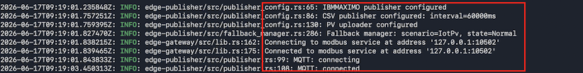
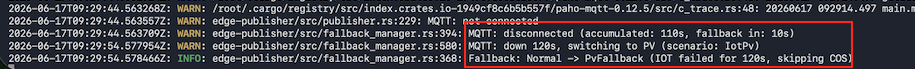
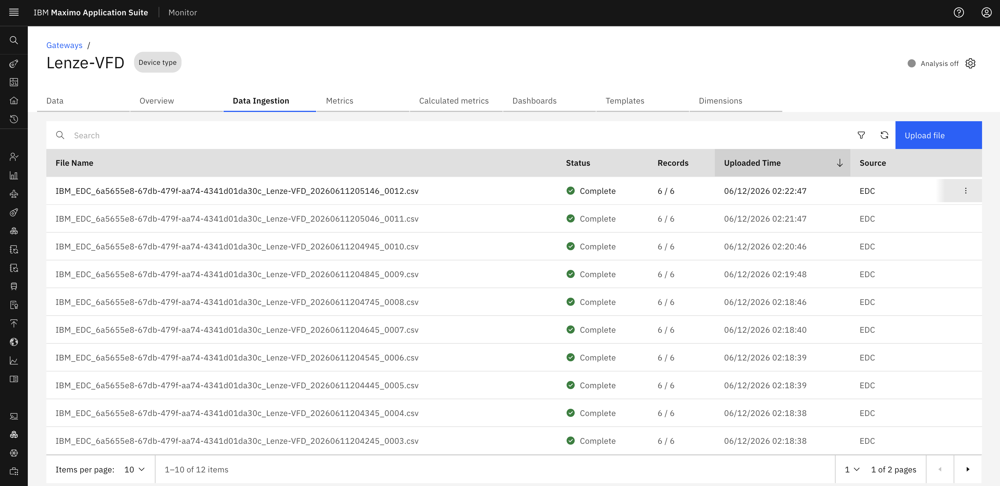
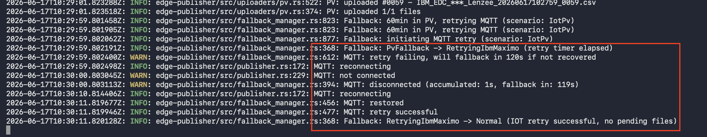
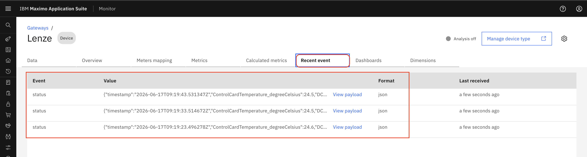

Objectives
In this exercise, you will learn how the Manage Gateway handles MQTT connection failures and seamlessly transitions data publishing to the PV fallback mechanism, as demonstrated in Scenario 4
Before you begin:
This Exercise requires that you have:
- completed the previous exercise
- Confirmed that the Monitor is configured for MQTT.
1. Configure and Deploy Managed Gateway
After configuring the device in Manage Gateway, the Docker command is generated automatically.
Navigate to:
Maximo Monitor → Gateway → View deployment instructions

Open a terminal on Mac or Linux, or the Command Prompt on Windows, navigate to the desired location, paste the Docker command from the clipboard, and press Enter to execute it.
2. Verify MQTT Data Flow
Verify the following details based on the device configuration:
- Device connection status is active
- Device is connected using Modbus protocol
- Device endpoint is configured with the IP address and port: '127.0.0.1:10502'
- Data publishing is active through MQTT connection
Verify the following details in the terminal:
- IOT/MQTT is configured as the primary publisher
- CSV publisher is configured as the fallback publisher
- PV available

3. Verify MQTT Failure Detection and PV Activation
Before testing the failover behavior, verify that Managed gateway is currently publishing data MQTT.
Info
MQTT Failure Scenario:
In this situation, when the primary MQTT publisher and PV serving as the fallback mechanism, the fallback behavior of the Managed Gateway can be assessed by disable the internet. The Managed Gateway identifies the connectivity loss and initiates the fallback mechanism, switching the PV within the specified timeout period.
- The system detects MQTT connection failure in 4 minutes approximately .
- Failure detection includes:
- 2-minute connection timeout
- 2-minute static delay
- Connection status checks
Attention
During the MQTT failure detection period (approximately 4 minutes), data loss may occur. Since MQTT is a real-time publishing protocol and does not queue messages when the connection is unavailable, data collected before the fallback mechanism cannot be recovered.
Once the fallback publisher is activated, data collection continues without interruption. New data is stored in CSV format. After the system remains in fallback mode for 60 minutes and automatically attempts to reconnect to the primary publisher.
After failure detection completes, Managed gateway switches to the PV fallback publisher.

After the CSV files are generated locally, Managed gateway uploads the files to the configured publishing method
To verify CSV file ingestion in Maximo Monitor go to:
Maximo Monitor → Device Types → Select Device Type → Data Ingestion
Verify the following details:
- CSV files continue to be uploaded successfully
- Source is displayed as EDC
Screenshot:

4. Verify MQTT Retry Configuration and publishing.
After the system remains in PV mode for 1 hour, Managed Gateway automatically retries the configured primary publisher every 1 hour until the connection is restored and normal data publishing resumes.
Retry behavior:
- MQTT retry process is started after 1 hour in PV mode
- MQTT connection check is performed
- Primary MQTT publisher recovery is attempted

Note
The Edge Data Collector automatically retries the primary MQTT publisher every one hour after the system remains in PV mode for one hour. Once the MQTT connection is restored, publishing automatically returns to the primary publisher.
Verify the device data update status in Monitor:
Maximo Monitor → Devices → Recent event
Verify the following details:
- Device telemetry data is updating continuously
- Latest event timestamps are updated

Learning Outcomes
After completing this exercise, you will be able to:
- Understand the Managed Gateway fallback architecture and publishing hierarchy
- Explain each fallback level and its purpose (MQTT, COS, and PV)
- Verify MQTT connection failure handling and automatic fallback activation
- Verify CSV generation and COS publishing behavior
- Verify PV fallback and primary publisher recovery
Congratulations, you have successfully verified that the Managed Gateway fallback system is working as expected.